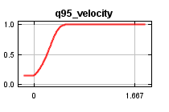
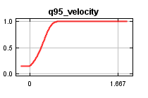

| Cumulative threshold | Cloglog threshold | Description | Fractional predicted area | Training omission rate | Test omission rate | P-value |
|---|
| 1.000 | 0.023 | Fixed cumulative value 1 | 0.489 | 0.019 | 0.056 | 5.024E-5 |
| 5.000 | 0.111 | Fixed cumulative value 5 | 0.329 | 0.037 | 0.056 | 7.586E-8 |
| 10.000 | 0.181 | Fixed cumulative value 10 | 0.252 | 0.037 | 0.167 | 3.744E-7 |
| 0.717 | 0.017 | Minimum training presence | 0.523 | 0.000 | 0.056 | 1.501E-4 |
| 21.456 | 0.332 | 10 percentile training presence | 0.156 | 0.093 | 0.222 | 8.361E-9 |
| 24.691 | 0.375 | Equal training sensitivity and specificity | 0.138 | 0.130 | 0.222 | 1.626E-9 |
| 15.592 | 0.258 | Maximum training sensitivity plus specificity | 0.197 | 0.037 | 0.222 | 1.76E-7 |
| 15.177 | 0.253 | Equal test sensitivity and specificity | 0.200 | 0.037 | 0.222 | 2.214E-7 |
| 7.118 | 0.142 | Maximum test sensitivity plus specificity | 0.291 | 0.037 | 0.056 | 9.946E-9 |
| 4.053 | 0.092 | Balance training omission, predicted area and threshold value | 0.350 | 0.019 | 0.056 | 2.16E-7 |
| 10.887 | 0.194 | Equate entropy of thresholded and original distributions | 0.241 | 0.037 | 0.167 | 2.071E-7 |


 
